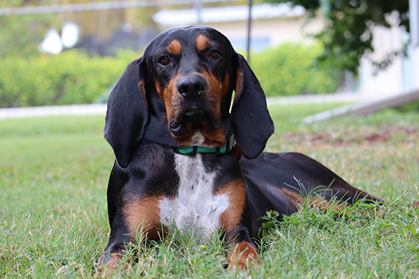

This week focuses more around CSS. We are focusing on things like fonts, colors, margins and more!
This my dog, Joey! He is the pride and joy of our home. My wife and I do not have kids, so Joey is our child. He is spoiled rotten, but he is a sweet as could be. He's high-energy, but once he has finally wound down, he is a total cuddlebug. Joey is extremely treat-driven in terms of his reward and training system.
We are slightly unsure of Joey's past. He is a rescue; 67.5% Treeing Walker Coonhound and 32.5% Black and Tan Coonhound according his DNA test. He is a rescue from a transport in north Florida. We believe that he is 1-2 years old. Based on the information that we have, we believe he was in a hunting camp in the Taylor County area. Hunters in these camps generally do not treat their dogs well at all, and often view them as a commodity rather than a living creature that needs love and care. They are kept outside in cages out in the elements. Joey had patchy fur and had clearly been insect bitten and scratching. He was also underweight when he came home to us. He has since transitioned to his role as king of the house, his fur coat is now full and shiny as could be! He went from extremely nervous and unsure to the happiest dog we've ever cared for, and you can tell he truly appreciates being given a much better life that he fully deserves!